데이터 기준 2026년 11월 14일(한국 시간), 미국 11월 13일 종가 · stayhungryasi.com
표기 규칙: 수치는 출처 기준 사실이다. '가정'과 시나리오 확률은 작성자의 주관적 판단이다. 인물 관련 내용은 보도된 사실과 의혹을 구분해 적었다. 투자 권유가 아니다.
핵심만 11장으로 요약했다. 이미지를 누르면 크게 볼 수 있다.
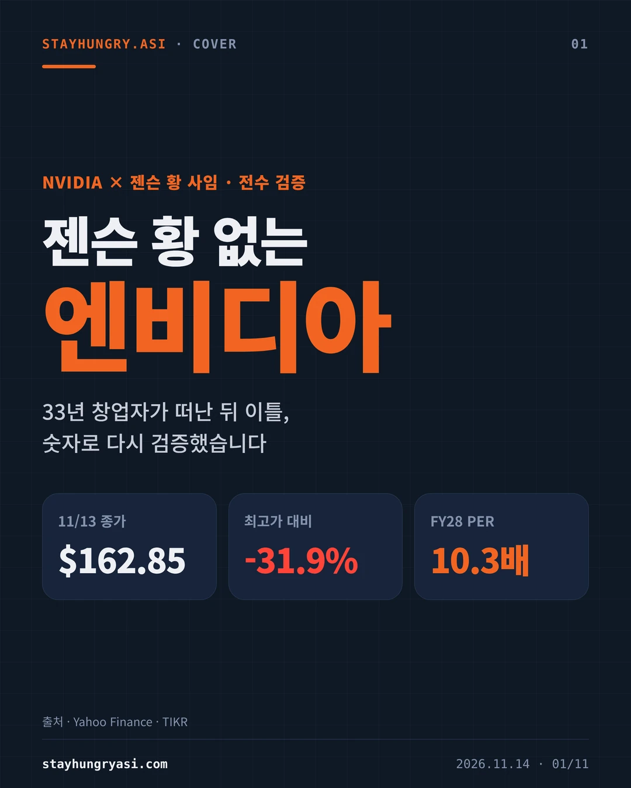
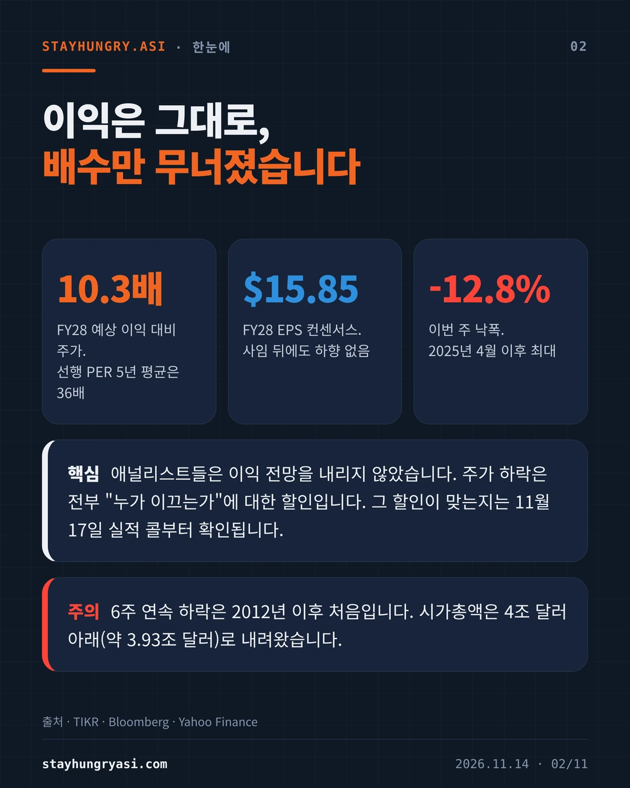
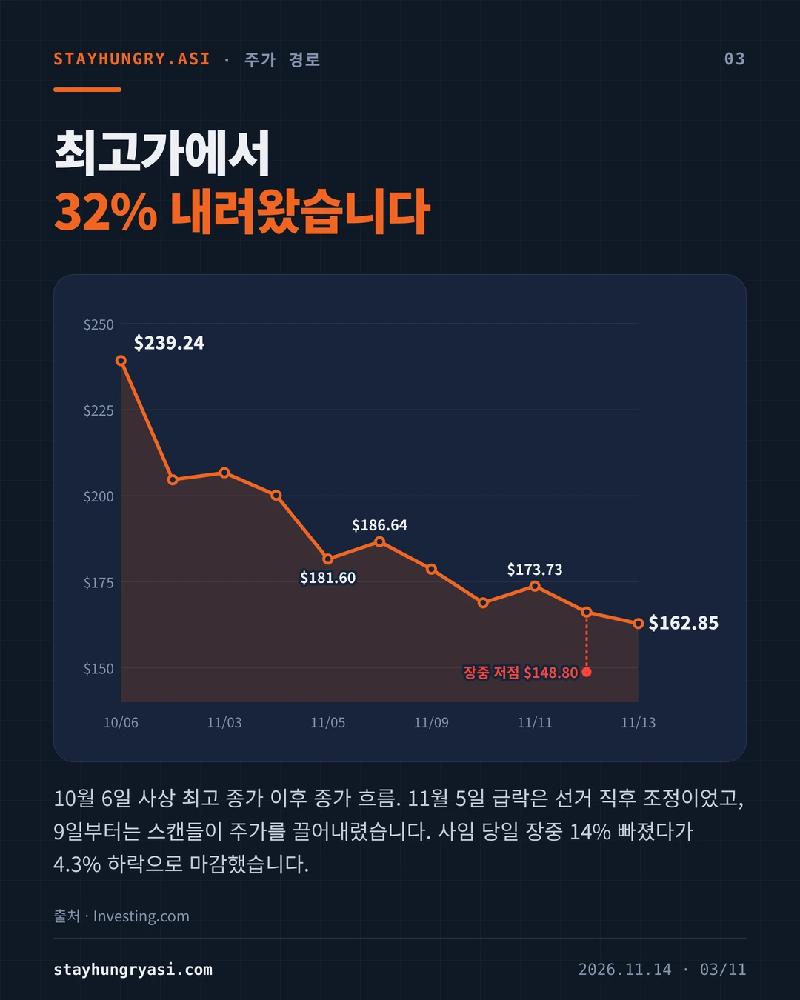
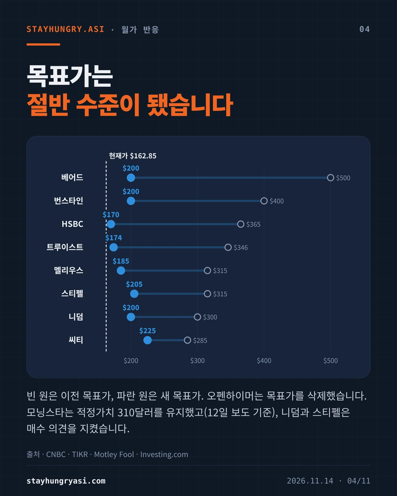
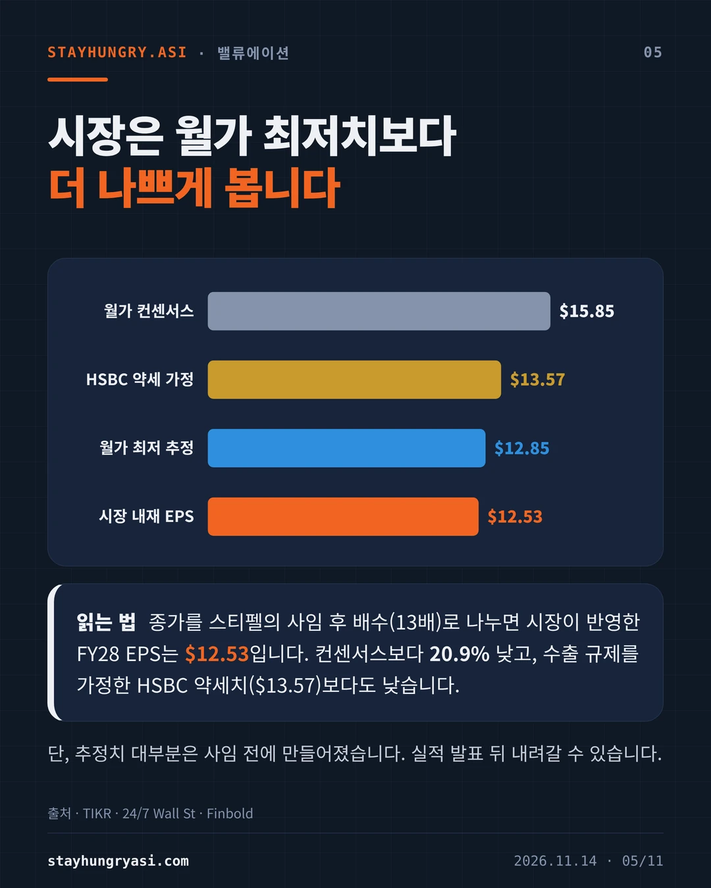
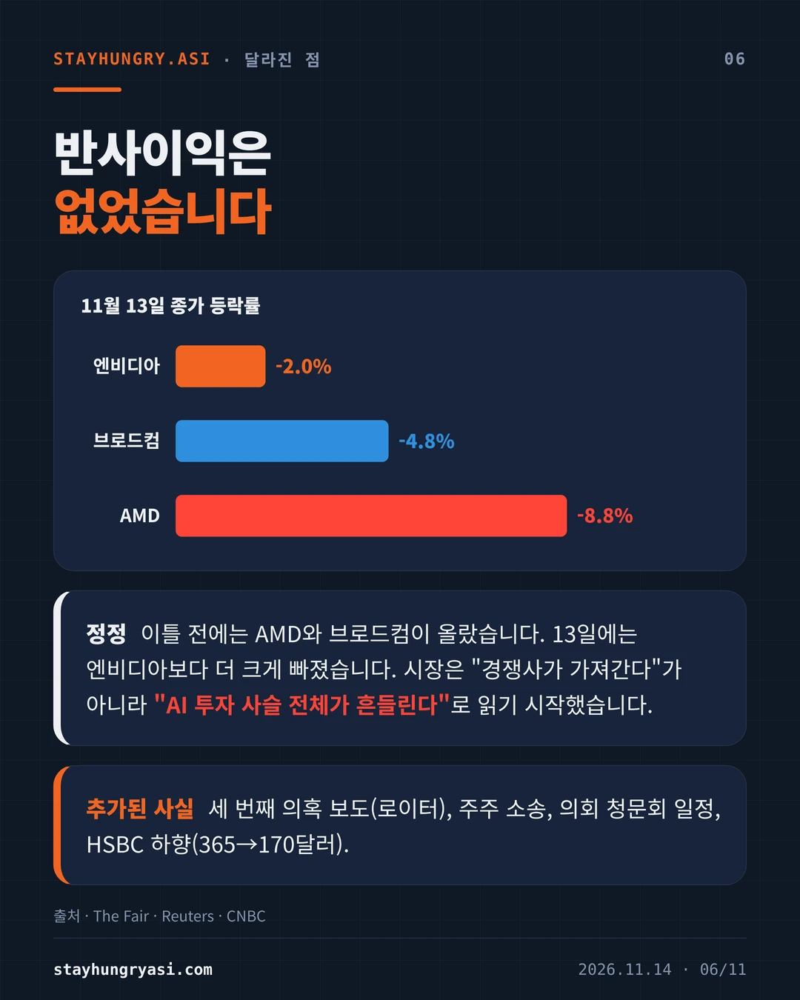
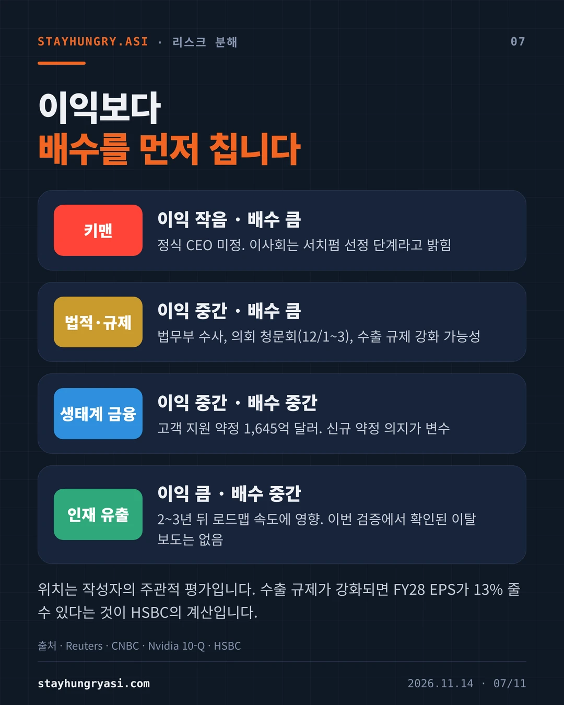
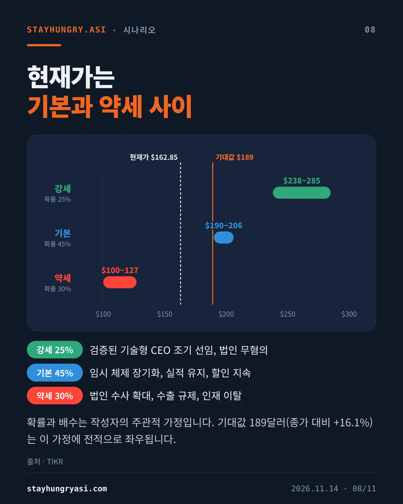
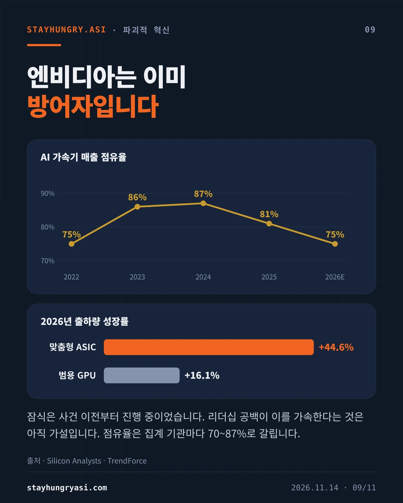
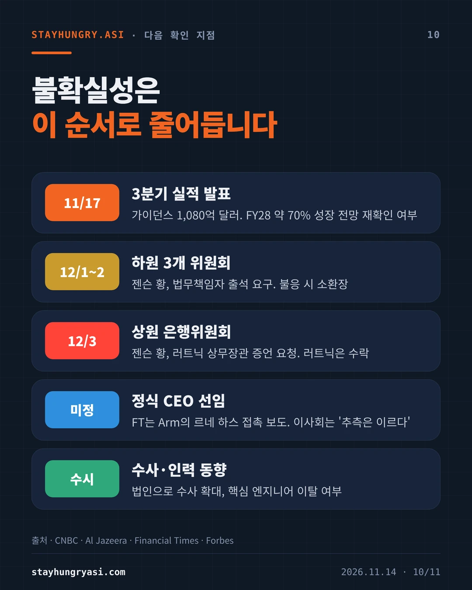
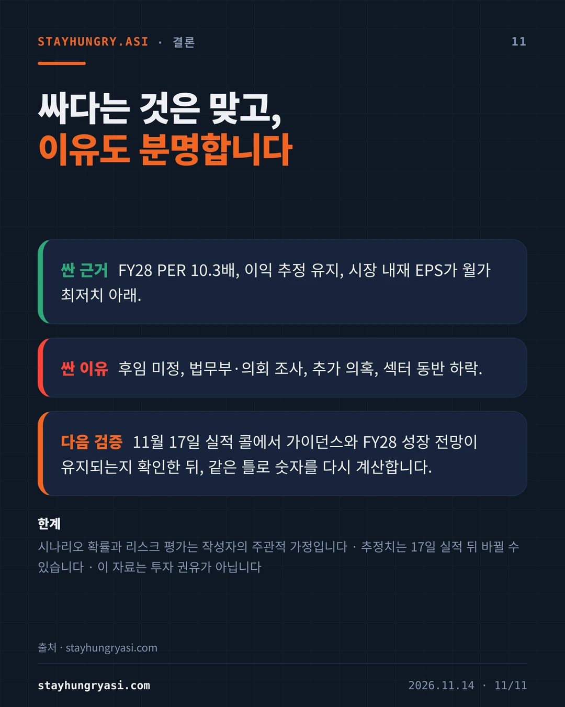
| 날짜 | 사건 |
|---|---|
| 2026-10-06 | 사상 최고 종가 239.24달러 |
| 2026-11-05 | 선거 직후 조정으로 9.26% 하락, 181.60달러 |
| 2026-11-08 | 황, 직원들에게 외도를 인정하고 사과. 이사회는 그가 외국 정보기관의 표적이었는지 독립 조사 착수 |
| 2026-11-11 | 장 마감 후 '이사회가 해임을 준비한다'는 보도. 시간외 8.6% 하락 |
| 2026-11-12 | 사임 발표. 장중 148.80달러까지 밀린 뒤 166.19달러(4.34% 하락)로 마감 |
| 2026-11-13 | HSBC 투자의견 하향. 162.85달러(2.01% 하락)로 마감, 주간 12.8% 하락 |
회사는 사임 사유를 밝히지 않았고, 국가안보 관련 위법이 확정된 것은 없다. 미 법무장관은 11월 12일 해당 인물이 스파이인지 결론 내리지 못했다고 말했다. 사임 뒤에는 또 다른 직원과의 관계 의혹이 로이터 보도로 추가됐다.
주간 낙폭 12.8%는 2025년 4월 이후 최대이고 6주 연속 하락은 2012년 이후 처음이다. 시가총액은 약 3.93조 달러로 4조 달러를 밑돌았다. 최소 9곳이 투자의견을 중립으로 내렸다.
| 기관 | 이전 목표가 | 새 목표가 | 투자의견 |
|---|---|---|---|
| 베어드 | $500 | $200 | 중립 |
| 번스타인 | $400 | $200 | 시장수익률 |
| HSBC | $365 | $170 | 보유 |
| 트루이스트 | $346 | $174 | 보유 |
| 멜리우스 | $315 | $185 | 보유 |
| 스티펠 | $315 | $205 | 매수 유지 |
| 니덤 | $300 | $200 | 매수 유지 |
| 씨티 | $285 | $225 | 확인 안 됨 |
오펜하이머는 목표가를 삭제했다. 모닝스타는 적정가치 310달러를 유지했다(11월 12일 보도 기준). HSBC의 이전 목표가는 365달러와 375달러 보도가 엇갈려 다수 보도를 따랐다.
| 항목 | FY28 EPS |
|---|---|
| 월가 컨센서스(집계처별 15.77~15.93달러) | $15.85 |
| HSBC 약세 가정(수출 규제 강화) | $13.57 |
| 가장 낮은 애널리스트 추정 | $12.85 |
| 시장 내재 EPS(작성자 계산) | $12.53 |
시장 내재 EPS는 종가 162.85달러를 스티펠이 사임 뒤 적용한 13배로 나눈 값이다. 컨센서스보다 20.9% 낮고 가장 낮은 애널리스트 추정치보다도 낮다. 12개월 선행 PER의 5년 평균은 36배였다. 다만 추정치 대부분은 사임 전에 만들어져 11월 17일 실적 발표 뒤 내려갈 수 있다.
11월 12일 장 초반까지는 AMD와 브로드컴이 올랐다. 13일에는 AMD가 8.75%, 브로드컴이 4.76% 내려 엔비디아보다 낙폭이 컸다. 시장이 점유율 이동보다 AI 투자 사슬 전체의 위험을 가격에 넣기 시작했다는 해석이 가능하다(작성자 판단). 엔비디아는 고객의 데이터센터 구축을 보증과 약정으로 지원해 왔고, 2026년 7월 분기 공시 기준 고객 지원 성격의 약정은 1,645억 달러다.
| 리스크 | 영향(작성자 판단) | 현재 상황 |
|---|---|---|
| 키맨 | 이익 작음 · 배수 큼 | 정식 CEO 미정. 이사회는 서치펌 선정 단계라고 밝힘 |
| 법적·규제 | 이익 중간 · 배수 큼 | 법무부 수사, 의회 청문회(12/1~3), 수출 규제 강화 가능성 |
| 생태계 금융 | 이익 중간 · 배수 중간 | 고객 지원 약정 1,645억 달러. 신규 약정 의지가 변수 |
| 인재 유출 | 이익 큼 · 배수 중간 | 2~3년 뒤 로드맵 속도에 영향. 이번 검증에서 확인된 이탈 보도는 없음 |
수출 규제가 강화되면 FY28 EPS가 13% 줄 수 있다는 것이 HSBC의 계산이다.
| 시나리오 | 확률 | EPS 가정 | 배수 | 주가대 | 조건 |
|---|---|---|---|---|---|
| 강세 | 25% | 15.85달러 유지 | 15~18배 | $238~285 | 검증된 기술형 CEO 조기 선임, 법인 무혐의 |
| 기본 | 45% | 15.85달러 유지 | 12~13배 | $190~206 | 임시 체제 장기화, 실적 유지, 할인 지속 |
| 약세 | 30% | 20~30% 하향 | 9~10배 | $100~127 | 법인 수사 확대, 수출 규제, 인재 이탈 |
확률가중 기대값은 189달러로 종가보다 16.1% 높다. 이 숫자는 위 가정에 전적으로 좌우되며 목표가가 아니다.
AI 가속기 매출 점유율은 2024년 약 87%에서 2026년 약 75%로 내려갈 것으로 추정된다(Silicon Analysts). 2026년 출하량은 맞춤형 ASIC이 44.6%, 범용 GPU가 16.1% 늘 전망이다(TrendForce). 잠식은 이번 사건 이전부터 진행됐다. 리더십 공백이 이를 가속한다는 것은 가설이며, 13일 경쟁사 급락은 이 가설과 어긋난다. 점유율은 집계 기관마다 70~87%로 갈린다.
| 시점 | 이벤트 | 확인할 것 |
|---|---|---|
| 11/17 | 3분기 실적 발표 | 가이던스 1,080억 달러. FY28 약 70% 성장 전망 재확인 여부 |
| 12/1~2 | 하원 3개 위원회 | 젠슨 황, 법무책임자 출석 요구. 불응 시 소환장 |
| 12/3 | 상원 은행위원회 | 젠슨 황, 러트닉 상무장관 증언 요청. 러트닉은 수락 |
| 미정 | 정식 CEO 선임 | FT는 Arm의 르네 하스 접촉 보도. 이사회는 '추측은 이르다' |
| 수시 | 수사·인력 동향 | 법인으로 수사 확대, 핵심 엔지니어 이탈 여부 |